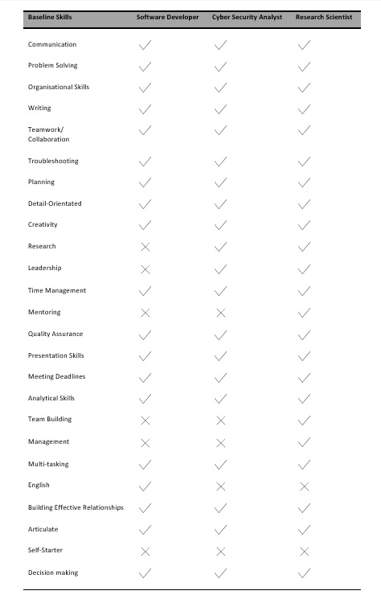

When it came to selecting an ideal job Bryce, Noah and Rhiannon had all initially selected the same role, that of Software Developer. Hannah had chosen Cyber Security Analyst and Daniel listed a very specific job, Research Scientist with company called OpenAI. These three jobs, while being very different from each other, also have a lot of elements in common. Personal skills differed little between the three careers. The importance placed on being able to communicate effectively, both orally and in written form, ranks very highly for all three jobs. The need to be able to integrate well into a workgroup, no matter the size or project, is also very important. You must be able to organise yourself and your workload effectively to succeed in these jobs. Attention to detail is important and presentation skills are required so that you can effectively share your ideas with clients, employers, and co-workers.
There are also technical skills that are similar in both jobs. Knowledge of programming languages SQL, JavaScript and JAVA were the top three requisites in the IT Specific Skills list from Burning Glass for all three jobs. Experience with operating systems also ranked highly, with Windows and LINUX featuring predominantly on the list. The differences between them are predominantly down to the level of education required for each career. Software Developers don’t necessarily require a degree or formal education, just a provable knowledge and experience with the programming languages required by the employer. Cyber Security Analysts, often need a degree in IT, Cyber Security, or Computer Science. They must also have or be able to quickly acquire an understanding of the required knowledge and industry specific laws and standards, as these differ from company to company, as well as from country to country. Research Scientists need the highest level of education out of the three, a master’s degree or doctorate in either Computer Science or a similar tech field. Their knowledge base must be more technical, with provable experience in machine learning, algorithms, and computer architecture. They must also provide proof of research skills with either first author publications or projects.
In conclusion, the basic skills for these roles are very similar. An understanding of IT technology and the industry is important. The need to be able to work well and communicate with others is also important. The main difference for these roles is the level of further education required for each job, mostly because of the technical skills required.
